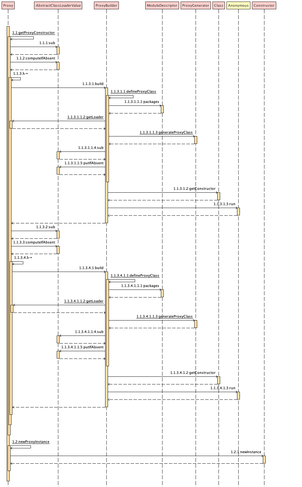

友情支持
如果您觉得这个笔记对您有所帮助，看在D瓜哥码这么多字的辛苦上，请友情支持一下，D瓜哥感激不尽，😜
|
|


有些打赏的朋友希望可以加个好友，欢迎关注D 瓜哥的微信公众号，这样就可以通过公众号的回复直接给我发信息。

公众号的微信号是: jikerizhi。因为众所周知的原因，有时图片加载不出来。 如果图片加载不出来可以直接通过搜索微信号来查找我的公众号。 |
73. Proxy
1
2
3
4
5
6
7
8
9
10
11
12
13
14
15
16
17
18
19
20
21
22
23
24
25
26
27
28
29
30
31
32
33
34
35
36
37
38
39
40
41
42
43
44
45
46
47
48
49
50
51
52
53
54
55
56
57
58
59
60
61
62
63
64
65
66
67
68
69
70
71
72
73
74
75
76
77
78
79
80
81
82
83
84
85
86
87
88
89
90
91
92
93
94
package com.diguage.truman.reflect;
import org.junit.jupiter.api.Test;
import java.lang.reflect.InvocationHandler;
import java.lang.reflect.Method;
import java.lang.reflect.Proxy;
import java.util.Arrays;
/**
* @author D瓜哥, https://www.diguage.com/
* @since 2020-04-02 09:37
*/
public class ProxyTest {
public static class LogProxy implements InvocationHandler {
private Object realObject;
public LogProxy(Object realObject) {
this.realObject = realObject;
}
@Override
public Object invoke(Object proxy, Method method, Object[] args)
throws Throwable {
System.out.println("Proxy: " + proxy.getClass().getName());
System.out.println("start to invoke: "
+ realObject.getClass().getName() + "#" + method.getName()
+ " args =" + Arrays.toString(args));
return method.invoke(realObject, args);
}
}
public static interface UserGetService {
String getById(Integer id);
}
static interface UserPostService {
String postUser(String name);
}
public static class UserGetServiceImpl implements UserGetService, UserPostService {
@Override
public String getById(Integer id) {
return "D瓜哥-" + id;
}
@Override
public String postUser(String name) {
return "119-" + name;
}
}
public static void main(String[] args) {
// 注意：这里不能使用 JUnit 来运行，JUnit 也是通过代理启动的，
// 先于我们的测试运行，导致设置无效。
System.getProperties()
.put("jdk.proxy.ProxyGenerator.saveGeneratedFiles", "true");
UserGetServiceImpl userService = new UserGetServiceImpl();
ClassLoader classLoader = UserGetService.class.getClassLoader();
Class<?>[] interfaces = UserGetServiceImpl.class.getInterfaces();
Object proxy = Proxy.newProxyInstance(classLoader,
interfaces, new LogProxy(userService));
System.out.println("UserName = "
+ ((UserGetService) proxy).getById(119));
System.out.println("UserCode = "
+ ((UserPostService) proxy).postUser("diguage"));
Object proxy2 = Proxy.newProxyInstance(classLoader,
interfaces, new LogProxy(userService));
System.out.println("UserName = "
+ ((UserGetService) proxy2).getById(119));
System.out.println("UserCode = "
+ ((UserPostService) proxy2).postUser("diguage"));
}
@Test
public void testGetCallerMethodName() {
System.out.println(getCallerMethod());
String methodName = new Object() {
}.getClass().getEnclosingMethod().getName();
System.out.println(methodName);
}
public String getCallerMethod() {
String methodName = Thread.currentThread()
.getStackTrace()[2] // 注意下标值
.getMethodName();
return methodName;
}
}

跟着代码整体走下来，所谓的"动态代理"，其实是在 java.lang.reflect.ProxyGenerator.generateProxyClass(java.lang.String, java.lang.Class<?>[], int) 中生成了一个实现了接口的代理类。生成字节码的逻辑封装在了 java.lang.reflect.ProxyGenerator.generateClassFile 中，按照字节码规范中规定的格式（魔数、版本号、常量池、访问标识符、当前类索引、父类索引、接口索引、字段表、方法表、附加属性），一点一点追加内容。
生成出来的类，继承了 java.lang.reflect.Proxy，同时实现了参数中传递的接口。在生成的类中，
-
包含一个参数为
InvocationHandler的构造函数，用于保存代理业务的实现； -
每一个方法都用一个静态
Method来表示； -
除了接口中的方法，还会生成
boolean equals(Object obj)，int hashCode()和String toString()三个方法。
调用时，通过 InvocationHandler 对象的 Object invoke(Object proxy, Method method, Object[] args) 方法来调起代理和目标对象的方法。其中，这里的 Object proxy 就是生成的类本身的对象；Method method 就是上述生成的静态 Method 对象；Object[] args 就是实际调用的参数。
1
2
3
4
5
6
7
8
9
10
11
12
13
14
15
16
17
18
19
20
21
22
23
24
25
26
27
28
29
30
31
32
33
34
35
36
37
38
39
40
41
42
43
44
45
46
47
48
49
50
51
52
53
54
55
56
57
58
59
60
61
62
63
64
65
66
67
68
69
70
71
72
73
package com.sun.proxy;
import com.diguage.proxy.UserService;
import java.lang.reflect.InvocationHandler;
import java.lang.reflect.Method;
import java.lang.reflect.Proxy;
import java.lang.reflect.UndeclaredThrowableException;
public final class $Proxy0 extends Proxy implements UserService {
private static Method m0;
private static Method m1;
private static Method m2;
private static Method m3;
public $Proxy0(InvocationHandler var1) throws {
super(var1);
}
public final int hashCode() throws {
try {
return (Integer)super.h.invoke(this, m0, (Object[])null);
} catch (RuntimeException | Error var2) {
throw var2;
} catch (Throwable var3) {
throw new UndeclaredThrowableException(var3);
}
}
public final boolean equals(Object var1) throws {
try {
return (Boolean)super.h.invoke(this, m1, new Object[]{var1});
} catch (RuntimeException | Error var3) {
throw var3;
} catch (Throwable var4) {
throw new UndeclaredThrowableException(var4);
}
}
public final String toString() throws {
try {
return (String)super.h.invoke(this, m2, (Object[])null);
} catch (RuntimeException | Error var2) {
throw var2;
} catch (Throwable var3) {
throw new UndeclaredThrowableException(var3);
}
}
public final String getById(Integer var1) throws {
try {
return (String)super.h.invoke(this, m3, new Object[]{var1});
} catch (RuntimeException | Error var3) {
throw var3;
} catch (Throwable var4) {
throw new UndeclaredThrowableException(var4);
}
}
static {
try {
m0 = Class.forName("java.lang.Object").getMethod("hashCode");(1)
m1 = Class.forName("java.lang.Object").getMethod("equals",
Class.forName("java.lang.Object"));
m2 = Class.forName("java.lang.Object").getMethod("toString");
m3 = Class.forName("com.diguage.proxy.UserService")
.getMethod("getById", Class.forName("java.lang.Integer"));
} catch (NoSuchMethodException var2) {
throw new NoSuchMethodError(var2.getMessage());
} catch (ClassNotFoundException var3) {
throw new NoClassDefFoundError(var3.getMessage());
}
}
}
| 1 | 为了排版，做了小调整。 |
还有两点值得注意：
-
运行代理时，如果想要保存生成的代理类字节码，需要系统属性
jdk.proxy.ProxyGenerator.saveGeneratedFiles设置为true。这个属性被解析后赋值给了java.lang.reflect.ProxyGenerator.saveGeneratedFiles字段，这个字段是final的。所以，需要在运行代码之初就要设置这个属性。所以，最好使用main方法来运行测试。否则，有可能设置失效。 -
如果代码是在 Maven 项目中运行，如果接口都是
public修饰，生成的类会被保存在${project.basedir}/com/sun/proxy/目录下；如果有接口是包私有的，则生成的类为接口所在的包。如果目录不存在，则会自动创建。 -
最多可以有
65535个接口；有两个解释：-
代码中有明确限制：在
java.lang.reflect.Proxy.ProxyBuilder.ProxyBuilder(java.lang.ClassLoader, java.util.List<java.lang.Class<?>>)中有interfaces.size() > 65535的判断语句。 -
字节码中，对于接口数量是用一个
u2变量表示的，该变量的最大值是216 - 1 = 65535。
-
注解底层也是基于动态代理实现的。
1
2
3
4
5
6
7
8
9
10
11
12
13
14
15
16
17
18
19
20
21
22
23
24
25
26
27
28
29
30
31
32
33
34
35
36
37
38
39
40
41
42
43
44
45
46
47
48
49
50
51
52
53
54
55
56
57
58
59
60
61
62
package com.diguage.truman.reflect;
import java.lang.annotation.Documented;
import java.lang.annotation.ElementType;
import java.lang.annotation.Retention;
import java.lang.annotation.RetentionPolicy;
import java.lang.annotation.Target;
import java.util.Arrays;
/**
* @author D瓜哥, https://www.diguage.com/
* @since 2020-04-08 23:34
*/
public class ProxyAnnoTest {
@Diguage
public static class AnnoTest {
}
@Diguage("https://github.com/diguage")
public static class AnnoTest2 {
}
@Retention(RetentionPolicy.RUNTIME)
@Documented
@Target(ElementType.TYPE)
static @interface Diguage {
String value() default "https://www.diguage.com";
String name() default "D瓜哥";
}
public static void main(String[] args) {
System.getProperties()
.put("jdk.proxy.ProxyGenerator.saveGeneratedFiles", "true");
Class<AnnoTest> clazz = AnnoTest.class;
Diguage annotation = clazz.getAnnotation(Diguage.class);
System.out.println(annotation + " : " + annotation.hashCode());
System.out.println("Name: " + annotation.name());
System.out.println("Value: " + annotation.value());
Class<? extends Diguage> annoClass = annotation.getClass();
System.out.println("\n----Class----");
String className = annoClass.getName();
System.out.println("\n----SuperClass----");
System.out.println(annoClass.getSuperclass().getName());
System.out.println("\n----Interfaces----");
System.out.println(Arrays.toString(annoClass.getInterfaces()));
System.out.println("\n----Methods----");
System.out.println(Arrays.toString(annoClass.getDeclaredMethods())
.replaceAll(", p", ",\n p"));
System.out.println("\n\n==============");
Diguage anno2 = AnnoTest2.class.getAnnotation(Diguage.class);
System.out.println(anno2 + " : " + anno2.hashCode());
}
}
每个注解都是一个接口声明，然后基于这个接口使用动态代理生成一个代理类。而被标注的注解，就是一个代理类的实例对象。
代理类中的 InvocationHandler 则是 AnnotationInvocationHandler 实例，实例变量 Map<String, Object> memberValues 保存着注解中成员属性的名称和值的映射，注解成员属性的名称实际上就对应着接口中抽象方法的名称。
总结
-
用反射 + 字节码生成技术来生成字节码，然后加载出来代理对象。
-
从java的角度来看这本语言,就是一个动态性语言,一切的动态性来源于类的加载方式, 在程序运行期间,可以很大程度上修改class
-
newProxyInstance(ClassLoader loader, Class<?>[] interfaces, InvocationHandler h)实际上从生成的 Class 文件和这个传递参数来看 jdk Proxy 仅仅对于接口进行代理, 即生成实现了接口的临时类对象. -
由于生成的类，继承了
java.lang.reflect.Proxy类，而 Java 是单继承的。所以，动态代理只能代理生成接口，不能代理类。
既然都生成代理类了，为什么不直接继承代理类呢？这样就可以对代理类所有的方法进行增强了。